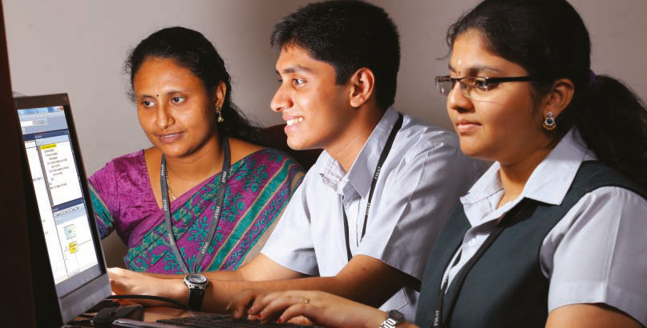

Home
 Department of Computer Science & Engineering was established in the year 2002. Annual intake of students for M.Tech (CSIS) is with 24 seats and &B.Tech (CSE) course is 120. The department has competent and committed faculty which encourages students` involvement in various co-curricular activities along with their academics. Computer Science students consistently bagged ranks in the MG University Examination with First and Third ranks in 2015 for theM.Tech program . A large number of students from our department get placed every year in national and multinational companies with 90 placement offers till date for the current batch. The department also takes initiative for the conduct of various inter/intra collegiate competitions to improve the skills of the students. The students are also provided finest opportunities to join various professional societies like IEEE, CSI, FFSF etc. The department has organized programmes like ICE-FOSS` in association with FISAT Free Software cell, and four International Conference on Advanced Computing & Communication Technologies. Department of Computer Science and Engineering is doing exceedingly well in the fields of higher technical education, research and industrial consultancy. The department officially launched an Incubation centre and an Industry institute Partnership cell in FISAT in collaboration with leading IT companies and professionals. CSE Department as part of its efforts to add value to our students and provide support to the student and faculty fraternity has entered into an MoU with Oracle Academy to integrate the Oracle Academy’s Advanced Computer Science curriculum. Reubro international signed a MOU to start Incubation centre Activities with FISAT on 8th January 2015.FISAT Chairman Sri.PaulMundadan and ICT Academy CEO Sri.SanthoshKuruphas signed a Memorandum of Understanding on 27th March 2015.Interaction between Institute and the Industry, is widely recognized as an essential requirement for moulding successful entrepreneurs technical savvies. The Department of Computer Science and Engineering, FISAT Incubation Centre envisions to provide a platform to the budding student entrepreneurs who have innovative ideas by offering mentoring support and facilitating industrial interactions.